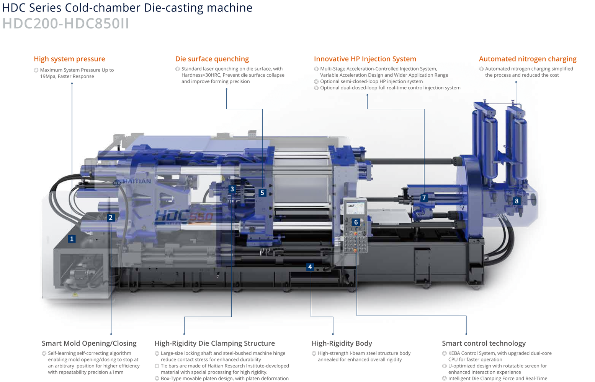
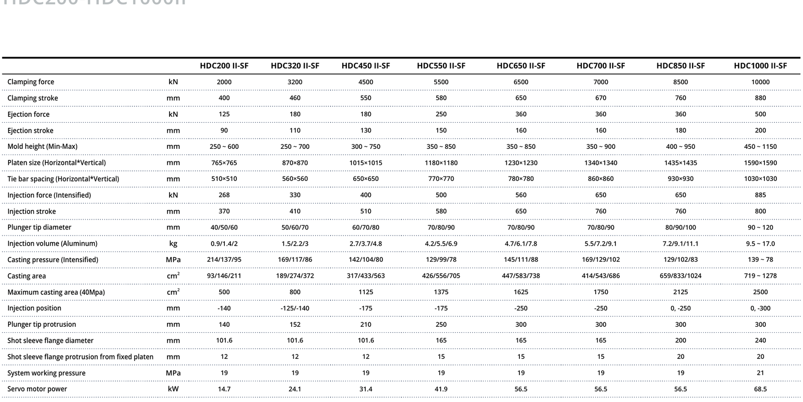
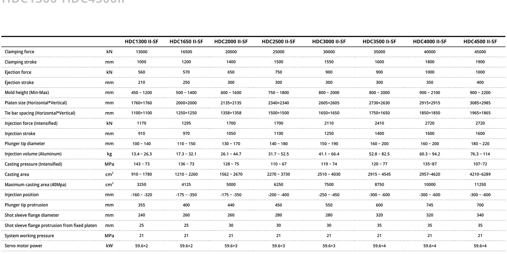

HDC200-HDC8800 II
Máy đúc áp lực buồng nguội Haitian HDC II
Nền tảng máy đúc áp lực thế hệ 2 của Haitian Die Casting, tập trung vào độ cứng vững, điều khiển phun chính xác và khả năng tích hợp cho sản xuất đúc áp lực hiệu suất cao.
HDC200-HDC4500 có bảng thông số
HDC5000-HDC8800 cần xác nhận hãng
Về dòng máy
Giải pháp đúc áp lực buồng nguội cho sản xuất công nghiệp
HDC II được giới thiệu trong brochure như dòng máy cold-chamber die casting từ HDC200 đến HDC8800 II. Tài liệu hiện có bảng thông số chi tiết cho HDC200-HDC4500 II-SF, cùng ghi chú rằng HDC5000-HDC8800 cần trao đổi trực tiếp với nhà sản xuất.
Điểm nổi bật
Cấu trúc nội dung theo nhóm lợi ích của landing page mẫu
Thay vì nói chung về thương hiệu, nội dung được gom theo các vấn đề người mua máy quan tâm: áp lực hệ thống, độ ổn định phun, độ cứng kẹp khuôn, điều khiển thông minh và khả năng hỗ trợ vận hành.
Áp lực hệ thống cao
Nhóm HDC200-HDC850 có áp lực hệ thống tối đa 19 MPa; nhóm HDC1000-HDC4500 sử dụng mức 21 MPa theo bảng thông số brochure.
Hệ thống phun HP cải tiến
Thiết kế gia tốc nhiều giai đoạn, tùy chọn bán vòng kín và tùy chọn điều khiển vòng kín kép thời gian thực cho áp suất/tốc độ.
Kết cấu kẹp khuôn cứng vững
Thanh tie bar dùng vật liệu do Haitian Research Institute phát triển, bàn di động dạng box-type giúp giảm biến dạng và giảm overlap.
Điều khiển thông minh
Hệ KEBA, màn hình màu 12 inch hoặc 18 inch tùy nhóm máy; hỗ trợ quản lý chất lượng, đường cong phun và giám sát năng lượng.

Ứng dụng công nghệ
Nhấn vào độ lặp lại, kiểm soát phun và an toàn kẹp khuôn
- Smart mold opening/closing với thuật toán tự học, độ lặp lại ±1 mm.
- Laser quenching bề mặt khuôn tiêu chuẩn, độ cứng trên 30 HRC.
- Giám sát lực kẹp khuôn thời gian thực để tăng an toàn vận hành.
- Nạp nitrogen tự động giúp đơn giản hóa thao tác bảo trì liên quan.
Dải model
Chia theo nhóm máy trong brochure
HDC200-HDC850 II
Nhóm máy nhỏ và trung, áp lực hệ thống 19 MPa, màn hình KEBA 12 inch, phù hợp nhu cầu cần cửa sổ quy trình linh hoạt và vận hành gọn.
Tư vấn model phù hợpHDC1000-HDC4500 II
Nhóm máy lớn, áp lực hệ thống 21 MPa, màn hình KEBA 18 inch, hỗ trợ kết nối phần mềm quản lý nhà máy thông minh và hệ phun vòng kín kép.
Xem bảng thông sốHDC5000-HDC8800 II
Brochure có nêu dải HDC200-HDC8800 II trên bìa, nhưng phần thông số ghi cần tham vấn nhà sản xuất cho HDC5000-HDC8800.
Cần bổ sung dữ liệuThông số kỹ thuật
Thông số tóm tắt không thay thế datasheet chính thức
Các khoảng dưới đây được rút từ bảng HDC200-HDC4500 II-SF trong brochure. Khi báo giá hoặc chọn máy cần đối chiếu lại phiên bản datasheet mới nhất.
| Nhóm model | Lực khóa khuôn | Thể tích phun nhôm | Áp lực làm việc | Chiều cao khuôn |
|---|---|---|---|---|
| HDC200-HDC1000 II-SF | 2.000-10.000 kN | 0,9-17,0 kg | 19-21 MPa | 250-1.150 mm |
| HDC1300-HDC4500 II-SF | 13.000-45.000 kN | 13,4-114 kg | 21 MPa | 450-2.200 mm |
| HDC5000-HDC8800 II | Cần hỏi nhà sản xuất để có thông số chính thức. | |||


Dịch vụ cần có
Giữ cấu trúc dịch vụ của landing page mẫu, nhưng chỉ ghi điều đã có nguồn
Brochure nêu Haitian Die Casting có trung tâm ứng dụng toàn cầu 5.000 m², các đơn vị thử khuôn, phòng vật liệu, x-ray inspection, xưởng xử lý nhiệt và mạ. Phần phạm vi dịch vụ tại Việt Nam cần bạn xác nhận thêm trước khi chốt.
Ứng dụng và thử khuôn
Global Application Center và die trial units được nêu trong brochure.
Đào tạo vận hành
Cần bổ sung phạm vi đào tạo, tài liệu tiếng Việt và lịch bàn giao thực tế.
Hậu mãi và phụ tùng
Cần xác nhận kho phụ tùng, thời gian phản hồi và chính sách bảo hành.
Giao hàng, lắp đặt
Cần xác nhận lead time, điều kiện mặt bằng và quy trình nghiệm thu tại Việt Nam.
Cần bạn bổ sung
Thông tin còn thiếu để landing page đủ sức chốt lead
- Đơn vị phân phối/chịu trách nhiệm bán HDC II tại Việt Nam.
- Hotline, email, Zalo và địa chỉ dùng cho sản phẩm máy đúc áp lực.
- Giá tham khảo hoặc cách tư vấn cấu hình theo sản phẩm khách hàng.
- Thời gian giao hàng, tồn kho, điều kiện nhập khẩu và lắp đặt.
- Chính sách bảo hành, bảo trì, phụ tùng và hỗ trợ kỹ thuật.
- Case study, ngành ứng dụng, vật liệu/chi tiết mẫu đã triển khai.
- Ảnh/video thực tế tại nhà máy Việt Nam nếu có.
Liên hệ tư vấn
Nhận đề xuất model HDC II theo chi tiết cần đúc
Gửi yêu cầu về lực khóa khuôn, vật liệu, khối lượng phun, kích thước khuôn hoặc bản vẽ chi tiết để đội kỹ thuật tư vấn cấu hình phù hợp.